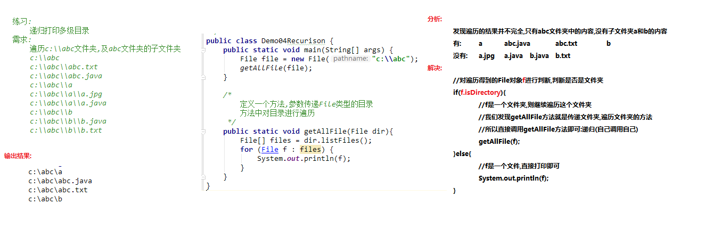

一、File类（java.io.File）
- 概述：
- java.io.File 类是文件和目录路径名的抽象表示，主要用于文件和目录的创建、查找和删除等操作。
- 创建一个文件/文件夹
- 删除文件/文件夹
- 获取文件/文件夹
- 判断文件/文件夹是否存在
- 对文件夹进行遍历
- 获取文件的大小
- File类是一个与系统无关的类，任何的操作系统都可以使用这个类中的方法
- file:文件
- directory:文件夹/目录
- path:路径
- 静态方法：
- static String pathSeparator:与系统有关的路径分隔符，为了方便，它被表示为一个字符串（;）
- static char pathSeparatorChar:与系统路径有关的分隔符（/）
- static String separator:系统有关的默认名称分隔符，为了方便，它被表示为一个字符串。
- static char separatorChar:与系统有关的默认名称分隔符
- 构造方法
- public File(String pathname) ：通过将给定的路径名字符串转换为抽象路径名来创建新的 File实例。
- 注意：
- String pathname字符串的路径名称，
- 路径可以是以文件结尾，也可以是以文件夹结尾
- 路径可以是相对路径，也可以是绝对路径，
- 路径可以是存在，也可以是不存在，创建File对象，只是把字符串路径封装为File对象，不考虑路径的真假情况
- public File(String parent, String child) ：从父路径名字符串和子路径名字符串创建新的 File实例。
- public File(File parent, String child) ：从父抽象路径名和子路径名字符串创建新的 File实例。
- 常用方法
- public String getAbsolutePath() ：返回此File的绝对路径名字符串。
- public String getPath() ：将此File转换为路径名字符串。
- public String getName() ：返回由此File表示的文件或目录的名称
- public long length() ：返回由此File表示的文件的长度（文件的大小，）。
- 以字节为单位
- 文件夹是没有大小给您的，不能获取文件的大小
- 如果此路径名表示一个目录，则返回值是不确定的。
- 如果构造方法中给出的路径不存在，那么length方法返回0
- 判断功能方法
- public boolean exists() ：此File表示的文件或目录是否实际存在。
- public boolean isDirectory() ：此File表示的是否为目录。
- public boolean isFile() ：此File表示的是否为文件。
- 创建和删除功能方法
- public boolean createNewFile() ：当且仅当具有该名称的文件尚不存在时，创建一个新的空文件。
- 注意：该方法声明抛出了IOException异常。
- public boolean delete() ：删除由此File表示的文件或目录（直接从硬盘删除）。
- public boolean mkdir() ：创建由此File表示的目录（创建单级文件夹）。
- public boolean mkdirs() ：创建由此File表示的目录，包括任何必需但不存在的父目录（可以是单级也可以是多级）
- 注意：
- 文件夹不存在，创建文件夹，返回true
- 构造方法中给出 的路径不存在返回false
- 文件夹存在，不会创建，返回false
- 目录的遍历
- public String[] list() ：返回一个String数组，表示该File目录中的所有子文件或目录
- public File[] listFiles() ：返回一个File数组，表示该File目录中的所有的子文件或目录。
- 注意：
- 遍历的是构造方法中给出的目录
- 如果路径不存在，就会抛出空指针异常
- 如果构造方法中给出的路径不是一个目录，也会抛出空指针异常
- 隐藏的文件也能获取到
- 在File类中有两个和ListFiles重载的方法，方法参数传递就是过滤器
- File[] listFiles(FileFilter filter)
- java.io.FileFilter接口：用于抽象路径名（File对象）的过滤器
- 作用：用来过滤文件的方法
- boolean accept(File pathname)测试指定抽象路径名是否应该包含在某个路径名列表中
- 参数：File pathname使用ListFiles方法遍历目录，得到每一个文件对象
- File[] listFiles(FilenameFilter filter)
- java.io.FilenameFilter接口：实现此接口的类实例可用于过滤器文件名
- 作用：用于过滤文件名称
- 抽象方法：boolean accept(File dir, String name)测试指定文件是否应该包含在某一文件列表中
- 参数：
- File dir:被遍历的目录
- String name:使用ListFiles方法遍历目录，获取每一个文件/文件夹的名称
- 绝对路径
- 绝对路径：从盘符开始的路径，这是一个完整的路径。
- 相对路径
- 相对路径：相对于项目目录的路径，这是一个便捷的路径，开发中经常使用。
- 注意：
- 路径是不区分大小写的
- 路径中的的文件名称分隔符windows使用反斜杠，反斜杠是转义字符，两个反斜杠代表一个反斜杠
二、递归
- 概念： 指在当前方法内调用自己的这种现象
- 分类：
- 直接递归： 直接递归称为方法自身调用自己。
- 间接递归： 间接递归可以A方法调用B方法，B方法调用C方法，C方法调用A方法。
- 注意事项：
- 递归一定要有条件限制，保证递归能够停止下来，否则会发生栈内存溢出
- 在递归中虽然有限定条件，但是递归次数不能太多，否则也会发生栈内存溢出
- 构造方法禁止递归
- 递归的使用前提：调用方法的时候，方法的主体不变，每次调用方法的参数不同，可以使用递归
- 内存溢出原理：

- 递归求和原理：

- 递归遍历目录原理：
- 过滤器原理